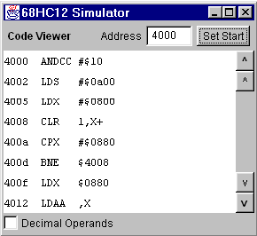

The code viewer window disassembles and displays 68HC12 machine code. The address field and "Set Start" button are used to set the starting point of the disassembly. One can scroll through the disassembly one instruction or one page at a time in either direction, however it is not possible to scroll before the specified starting location.
If memory locations before the viewed location but after the start location are altered via loading an S19 file or by modifying the memory in the Memory Viewer, a new starting location is set to a point after the change. You will need to press "Set Start" again, and re-disassemble the code.
The "Decimal Operands" check box forces operand display to decimal rather than hexadecimal. Branch targets are always expressed in hexadecimal, however.